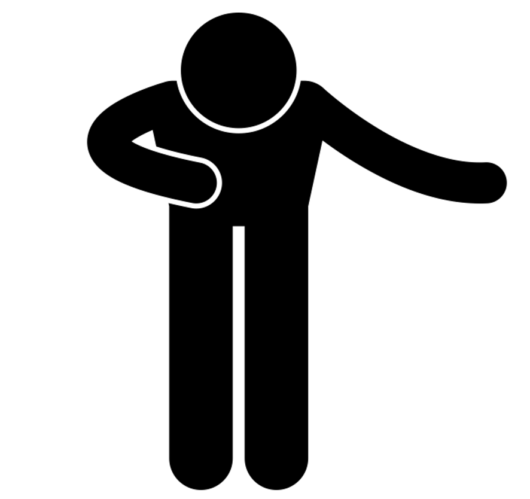

안녕하세요!
먼저 이 사이트에 접속해주셔서 감사합니다.
저희는 학생 양태민, 이태훈, 김인환입니다.
저희는 '코'로나를 '알라', 줄여서 "코알라(CoAla)"라는 이름의 웹페이지를 만들었습니다.
저희는 코로나가 더욱 심각해지는 이 시기에
아직까지도, 몇몇 사람들이 코로나의 심각성을 알지 못하고
‘나 하나쯤은 괜찮겠지’라는 생각으로
공공장소에서 마스크를 끼지 않는 행위와 같은
다른 사람들에게도 피해가 가는 행동들을 많이 하는 것을 보고
사람들에게 심각성을 일깨워주고 경각심을 가지게 함으로써
사람들이 조금이나마 자신의 행동을 조심히 하고
코로나를 완화시키기 위한 사회적 노력에 동참하게 하고자
이 사이트를 만들게 되었습니다.
저희는 이 사이트를 만들어서 웹뷰 형식의 어플을 만들 계획입니다.
웹뷰 형식이란 어플 안에 저희가 만든 이 웹사이트를 넣어서 사용하는 방식인데
자체 앱을 만들기에는 어려움이 많아서 이 웹뷰 형식을 선택하게 되었습니다.
아직 많이 부족하지만 열심히 만들었습니다. 잘 봐주시면 감사하겠습니다!!